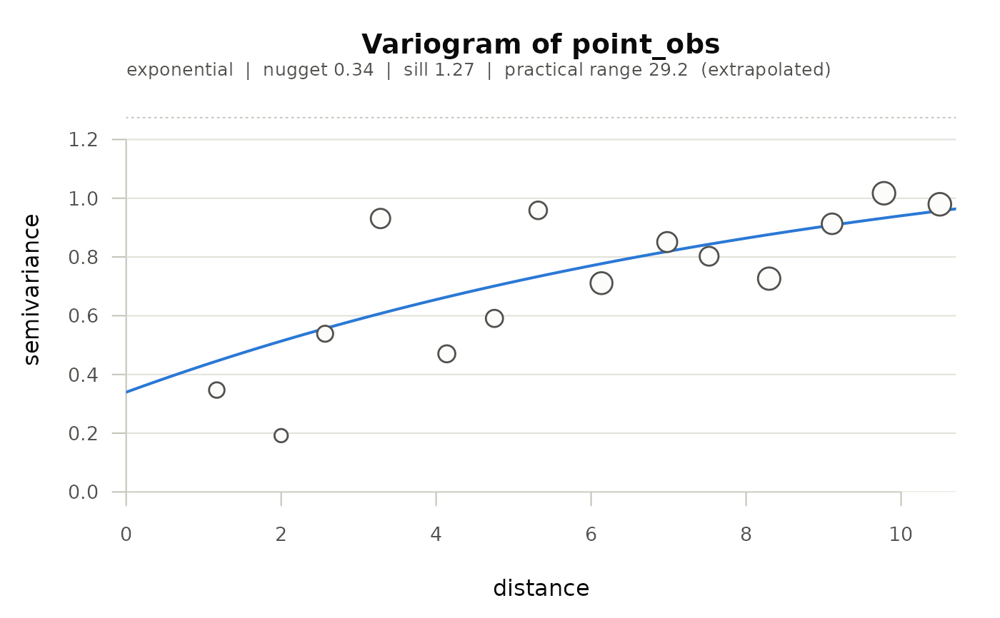

Bins every pair of samples by the distance between them, averages the squared difference within each bin, and fits a variogram model to the result. This is the summary that decides the rest of a sampling programme: the range says how far one core speaks for, and the nugget says how much of the variation no sampling density will ever resolve.
Usage
ofe_variogram(
data,
value,
x = NULL,
y = NULL,
trend = NULL,
n_bin = 15L,
cutoff = NULL,
model = c("exponential", "spherical", "gaussian")
)Arguments
- data
Data frame of point samples.
- value
Character; the column to compute the variogram of.
- x, y
Character; projected coordinate columns, in metres. Defaults to
"x"/"y", or"x_centre"/"y_centre"when those are present.- trend
Optional one-sided formula of terms to remove before computing the variogram, e.g.
~ treator~ treat + rep.- n_bin
Integer; number of distance bins.
- cutoff
Numeric; largest lag to use. Defaults to a third of the greatest distance between samples, the usual convention – beyond that the bins hold few pairs and say more about the paddock's shape than its soil.
- model
Variogram model(s) to fit: any of
"exponential","spherical","gaussian". With more than one, the best weighted fit is chosen and the others are kept for comparison.
Value
An object of class ofe_variogram: a list with empirical (a data
frame of h, gamma, n_pair), the fitted model, nugget, psill,
range, practical_range, sill, nugget_ratio, range_identified
(whether the practical range falls inside the distances actually sampled),
the fits for every model tried, and the settings used. plot.ofe_variogram() draws it;
kriging_sample_interval() takes it directly to turn it into a sampling
interval and a core count.
Reading the output
The nugget ratio – nugget over total sill – is the number to look at
first, and print.ofe_variogram() classifies it on the usual convention
(Cambardella et al. 1994): below 0.25 is strong spatial dependence, 0.25 to
0.75 moderate, above 0.75 weak. A weak-dependence variable is effectively
noise at the scale sampled, and no amount of kriging will make a useful
surface of it; that is a finding about the sampling design, and the honest
response is to sample closer together or give up on that layer, not to krige
it anyway.
Removing a trend first
A variogram assumes the mean is constant. If it is not – the treatment
raises yield on half the strips, the paddock slopes – the variogram keeps
climbing and never reaches a sill, and the fitted range is inflated by the
trend rather than describing the correlation. Pass trend to remove that
first: trend = ~ treat fits and strips the treatment effect, and the
variogram is computed on what remains.
Examples
sim <- simulate_ofe_trial(n_row = 30, n_col = 20, n_point_samples = 60,
point_range = 6, seed = 1)
pts <- sim$point_samples
pts$x <- pts$col
pts$y <- pts$row
v <- ofe_variogram(pts, value = "point_obs")
v
#> Variogram of `point_obs` (60 samples, 14 lag bins)
#>
#> Fitted model: exponential
#> value
#> nugget (c0) 0.3396
#> partial sill (c1) 0.9348
#> total sill 1.2745
#> range parameter 9.7201
#> practical range 29.1603
#> nugget ratio 0.2665
#>
#> The fitted practical range (29.2) is longer than the largest lag the
#> samples cover (10.5). The variogram has not reached its sill inside the
#> data, so the range is an extrapolation: curves that differ well beyond
#> the sampled distances fit these points equally. Treat it as a lower
#> bound, and sample over a longer transect before using it to set a
#> sampling interval.
#>
#> Spatial dependence: moderate (nugget ratio 0.27)
#> Part of the variation is spatially structured. Kriging will smooth, and
#> the surface will be less variable than the truth.
#>
#> Models compared (weighted SSE, lower is better):
#> sse
#> exponential 12.49
#> spherical 12.61
#> gaussian 13.25
plot(v)
